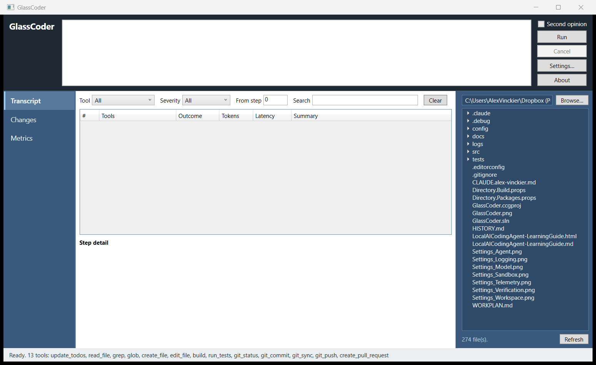

The window, annotated
One window, one goal box, three surfaces. The screenshot below is the app at rest — booted, nothing run yet.

1 2 3 4 5 6 7- Goal box
- Free text, bound two-way on every keystroke. This is the entire task description — there is no separate task form.
- Run · Cancel
- Mutually exclusive: Run is enabled only when idle, Cancel only while a
run is in flight. Cancel trips the run's
CancellationToken. - Surface list
- Transcript, Changes, Metrics. Selecting one swaps the view model; WPF picks the view
from a
DataTemplate. Selecting Metrics also reloads it from disk. - Filter bar
- Tool, severity, minimum step and free-text search. All four combine with AND and apply live to the table below.
- Step table
- One row per loop step, appended as the run happens. Empty here because nothing has run yet.
- Step detail
- The full prompt, response and tool results for the selected row — read-only, monospaced, selectable so you can copy a prompt out.
- Status bar
- At rest, the registered tool count and their names. During a run,
Running…. Afterwards, the stop reason, step count, tokens and tool-call validity.
Ready. 7 tools: update_todos, read_file, grep, glob, edit_file, build, run_tests
is the honest inventory of what the model can actually call this session. Note what is
absent: bash. It only registers when
Sandbox:EnableBashTool is true, so this line is the fastest way
to confirm which configuration the app really loaded.
Nothing in the window is driven from code-behind. MainWindow.xaml.cs is
eighteen lines and its only statement of substance is DataContext = viewModel.
Starting it
# from the repository you want the agent to work on
dotnet run --project src/GlassCoder.Wpf
# or build once and launch the exe from that repository
dotnet build -c Release
src\GlassCoder.Wpf\bin\Release\net10.0-windows\GlassCoder.Wpf.exeThe working directory is not a detail
Two different roots are in play, and confusing them is the most common way to get a confusing first run:
- Content root
- Always
AppContext.BaseDirectory— the output folder. This is whereappsettings.jsonis read from, so the app finds its configuration no matter where you launch it. - Working directory
- Whatever the process inherits.
Workspace:RepoRootdefaults to".", so the directory you launch from is the repository the agent reads and edits.
That split is deliberate: config travels with the binary, the target repository does not.
The consequence is that dotnet run from the repository root does the right
thing, because the app inherits your shell's directory rather than the project's.
GlassCoder.Host ships a Properties/launchSettings.json whose
every profile sets "workingDirectory": "..\\..".
GlassCoder.Wpf has no launchSettings file at all. Press F5 on it and
the app starts in its own bin\Debug\net10.0-windows folder — so
RepoRoot becomes the output directory, and the agent will grep its own DLLs
and find nothing useful.
Either add the missing profile:
// src/GlassCoder.Wpf/Properties/launchSettings.json
{
"profiles": {
"GlassCoder.Wpf": {
"commandName": "Project",
"workingDirectory": "..\\.."
}
}
}or name the repository explicitly, which works from anywhere:
# PowerShell
$env:GlassCoder__Workspace__RepoRoot = "C:\src\the-repo"
dotnet run --project src/GlassCoder.Wpf
The console host has a --repo switch for this. The desktop app has no
equivalent — configuration or the working directory are your only levers.
Before the first Run
The app inherits config/appsettings.json wholesale. Five settings decide
whether your first run does anything interesting:
| Setting | Ships as | Why you care |
|---|---|---|
| Models:Roles:worker:Endpoint | http://localhost:8001/v1 | Nothing works until something answers here. The app does not host a model. |
| Workspace:WritablePaths | [] | Empty means nothing is writable. Leave it empty for a read-only first run;
set ["src", "tests"] before you expect an edit to land. |
| Approval:RequireApprovalForWrites | false | The gate approves silently. Set true or the Changes surface will
never prompt you. |
| Sandbox:Mode | Docker | Builds and tests run in a container with the network dropped. No Docker means no build rung — and no silent fallback to running on your host. |
| Metrics:Directory | metrics | Resolved against the working directory. The Metrics surface reads this exact path, so a wrong working directory shows an empty dashboard. |
Any of them can be overridden without touching the file — double underscore separates the levels:
$env:GlassCoder__Approval__RequireApprovalForWrites = "true"
$env:GlassCoder__Agent__MaxSteps = "50"What pressing Run actually does
It refuses on a blank goal or while already running, then flips to
Transcript — you are always looking at the surface that is
filling. The run is submitted as task id desktop, which is how you will
recognise it later in metrics.jsonl and on the Changes surface.
When it ends, the status bar carries the verdict — stop reason, steps, total tokens and
tool-call validity. A thrown exception becomes Failed: … rather than a crash
dialog, and cancelling reads Cancelled.
Transcript
Steps arrive from the in-process transcript bus as the loop turns and are appended live. Six columns:
| Column | Holds |
|---|---|
| # | Step index — the same number the JSONL log uses. |
| Tools | Comma-separated tool names for the step, or - when the model only spoke. |
| Outcome | The step's recorded outcome. |
| Tokens | Total tokens for the step. |
| Latency | Model latency in milliseconds. |
| Summary | name:status per tool call, or the response text when there were none. |
Severity is derived, not reported
Rows colour themselves, and the severity filter matches the same three values. Nothing sets them by hand — they fall out of the record:
- error
- The step itself carries an error. Rendered dark red.
- warning
- At least one tool call failed to parse — the model emitted something the schema rejected. Rendered amber.
- info
- Everything else.
Filtering on warning is therefore the direct way to inspect tool-call validity failures, which is the metric Phase 0 is judged on.
The filters
Tool, severity, minimum step and search are ANDed. The search box is the broad one: it matches the row summary and the full detail text, so searching for a filename finds every step that read it, edited it, or merely mentioned it in a prompt.
The Clear button empties the transcript bus as well as the table. It discards the
in-memory step history for the session — the filters go back to showing everything
because there is no longer anything to show. The JSONL written under
Logging:Directory is untouched, so the run is still recoverable from disk;
the live view is not.
Changes & approval
Every change the agent proposed appears here — time, task, file, line range, status and note — including the ones that were refused. A view that showed only successful writes could not tell you what the agent tried to do, which is usually the more interesting question.
- Proposed
- Waiting on a decision.
- Applied
- Written to disk. Green.
- Rejected
- Refused, with the reason in the Note column. Red.
- Reverted
- Applied, then rolled back.
Selecting a row renders it as a before/after diff underneath, with old and new line numbers and per-line colouring, and the compile or test result that change produced shown above the diff. Verification is attached to the change rather than reported separately, so "did this edit break the build" is answered in the same place as "what did this edit do".
The approval prompt
With Approval:RequireApprovalForWrites on, each write pauses and an amber
banner appears at the top of the surface: the path, the diff itself, and
Approve / Reject. The decision is made next to the actual change — never in a
modal dialog naming a file you would then have to go and look up.
Three behaviours are worth knowing before you rely on it:
- A timeout is a refusal. Nobody answering within
ApprovalTimeoutSeconds(300 by default) rejects the change with that reason recorded. An unattended prompt must never become a write. - Cancelling a run rejects what is pending, noted as cancelled while waiting for approval — it does not leave a half-decided change behind.
- Approval is the last gate, not the only one. The banner says the change has already passed verification; anything the ladder refuses never reaches you.
The console host cannot ask anyone, so it fails closed instead. The desktop app is the only
front end where interactive approval is a real option — that is precisely why
WpfApprovalGate replaces the headless gate at startup.
Metrics
The dashboard reads metrics.jsonl — the same file a notebook would read, with
no intermediate database — and aggregates it. It reloads when you select the surface, and
on demand from the Reload button.
Rows are groups, not runs. Group by Arm (the default, falling back to the run source when an arm is unnamed), Task or Source. A single run's numbers are noise; the question an ablation answers is always which arm, and by how much.
| Column | Aggregation |
|---|---|
| pass@1 | Share of graded runs that passed the oracle. Shows - when nothing in the group was graded — not 0%. |
| Tool validity | Mean tool-call validity rate. |
| Tokens to solve | Mean tokens, with a bar. The bar is scaled to the widest row in the current grouping — it is relative, so it rescales when you regroup. |
| Wall-clock | Mean seconds per run. |
| Compile err/edit | Mean compile errors per edit — the Phase 1 number. |
| Recovery | Mean recovery rate — the Phase 2 number. |
| Cascade | Mean cascade ratio. |
| Fresh | Count of runs whose context was fresher than the code — the Phase 6 comparison. |
| Cost | Summed, not averaged: total spend for the group. |
The status line under the table always names the file it read. If a group looks wrong, that path is the first thing to check — it is resolved against the working directory, so it follows wherever you launched from.
A malformed final line — the harness writing a run out as you look — is skipped rather than emptying the dashboard. You can open Metrics while a suite is still going.
How the shell is wired
App.OnStartup builds the same host the console front end builds, then
adds only what a UI needs on top. That is the whole design: if the two front ends resolved
different services, they would slowly become two different agents and nothing measured in
one would apply to the other.
The view models are singletons on purpose. WpfApprovalGate is handed the very
same ChangesViewModel instance the Changes surface is bound to — that shared
instance is the channel through which a background approval request reaches the
screen.
Navigation without a navigation service
There is no navigator and no page registry. The window declares one
DataTemplate per view-model type; selecting a surface assigns a view model to
CurrentView, and WPF resolves the view by type:
<DataTemplate DataType="{x:Type vm:TranscriptViewModel}">
<views:TranscriptView />
</DataTemplate>Adding a surface therefore cannot desynchronise a lookup table, because there is no lookup table to keep in sync.
Threads
The agent loop runs on a background thread; the collections it feeds are bound to the UI.
Both live-updating view models take the dispatcher by constructor injection and marshal
every mutation through BeginInvoke — the transcript when a step is recorded,
the changes view when a change is added or updated. Both parameters default to
Dispatcher.CurrentDispatcher, which is what lets the view models be
constructed directly in unit tests.
Approval crosses the same boundary in the other direction. The gate is called on the loop's
thread and awaits a TaskCompletionSource; the banner is raised on the UI thread
and the button click completes it. The loop is genuinely blocked in the meantime — which is
the point of a gate.
Command enabling
RelayCommand routes CanExecuteChanged through WPF's
CommandManager.RequerySuggested. Run and Cancel re-evaluate when the framework
next goes idle rather than on an explicit raise — so their enabled state can lag a state
change by a frame. That is normal and not a bug you need to chase.
Shutdown
OnExit stops the host with a five-second grace period and disposes it, and the
shell view model cancels any run still in flight. Closing the window mid-run cancels it
rather than orphaning it.
Adding a surface
Three edits, in three files, with no navigation plumbing in between.
-
Write the view model and the view
Derive from
ViewModelBase; useSetPropertyfor bindable state andRelayCommandfor buttons. Take theDispatcheras an optional constructor parameter if anything updates from a background thread. Add a matchingUserControlunderViews/. -
Register it
One
AddSingleton<YourViewModel>()inApp.OnStartup, and oneDataTemplateinMainWindow.xamlmapping the type to the control. -
List it
Add the name to
MainWindowViewModel.Surfaces, inject the view model, and add its arm to theSelectedSurfaceswitch. Do any on-entry refresh work there — that is where the Metrics surface triggers its reload.
No business logic in code-behind. Every view's .xaml.cs in this project
contains InitializeComponent() and nothing else, and architecture tests
exist to keep it that way — put the logic in the view model.
When it looks wrong
| Symptom | Cause, and the fix |
|---|---|
| Status bar lists fewer tools than expected | Config was not the one you edited, or a tool is gated off. bash needs
Sandbox:EnableBashTool. Remember appsettings.json is
read from the output folder — rebuild after editing
config/appsettings.json. |
| The agent cannot find obvious files | Wrong working directory — almost always F5 from Visual Studio, which starts the
app in bin\Debug\net10.0-windows. Add the launchSettings profile or
set GlassCoder__Workspace__RepoRoot. |
| Every edit is refused | Workspace:WritablePaths is empty, which means nothing is writable.
Opt in explicitly. |
| Writes land with no prompt | Approval:RequireApprovalForWrites is false — the
shipped default. The gate is installed and approves immediately. |
| Approval rejected itself | Nobody answered within ApprovalTimeoutSeconds, or the run was
cancelled while the banner was up. The reason is in the change's Note. |
| Metrics says no metrics yet | The status line names the exact path it looked at. Either nothing has been run yet, or the working directory is not what you assumed. |
pass@1 shows - |
No run in that group was graded against an oracle. This is not zero — it is "unmeasured". Run the task suite rather than ad-hoc goals. |
| Transcript went empty | Clear was pressed; it empties the bus, not just the view. The JSONL under
Logging:Directory still has the run. |
| Run does nothing | The goal box is blank, or a run is already in flight. Both are silent no-ops. |
| Build steps fail immediately | Sandbox:Mode is Docker and Docker is not available.
There is no fallback to running on the host, by design. |